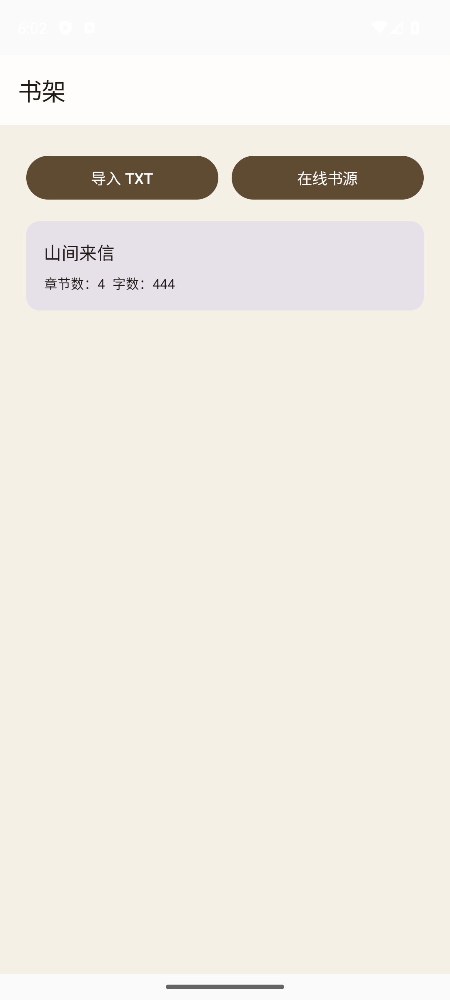
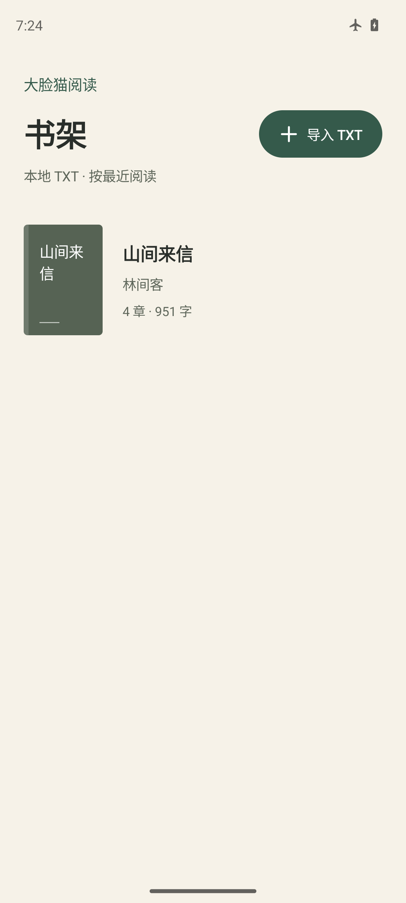
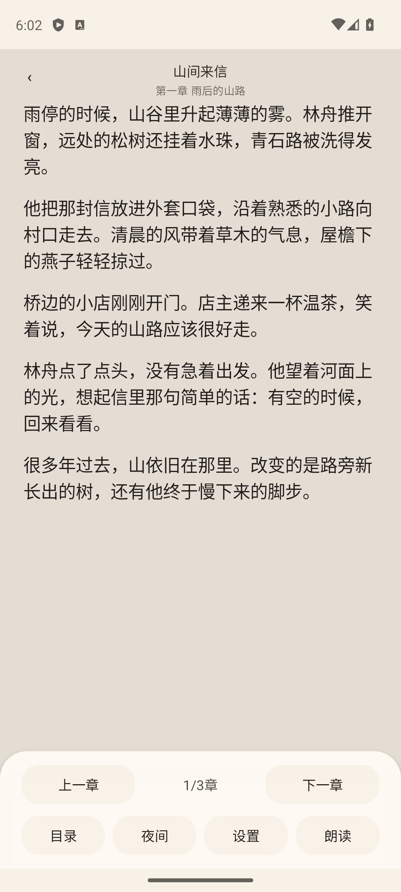
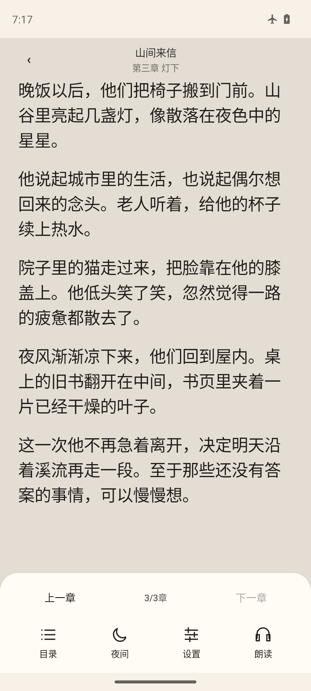
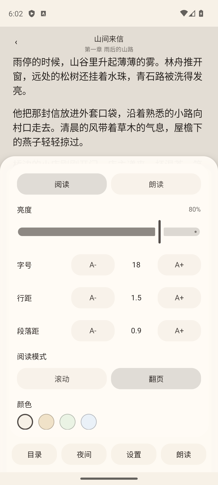
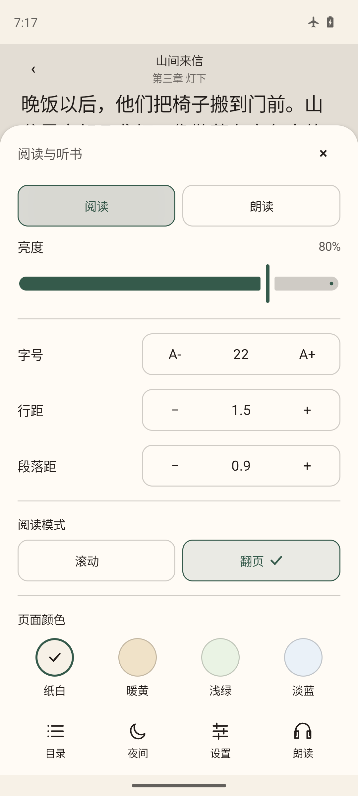
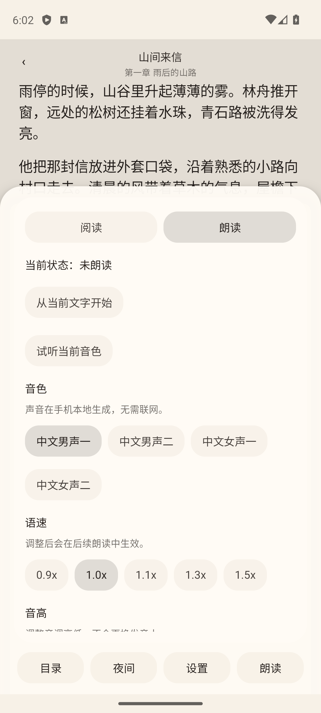
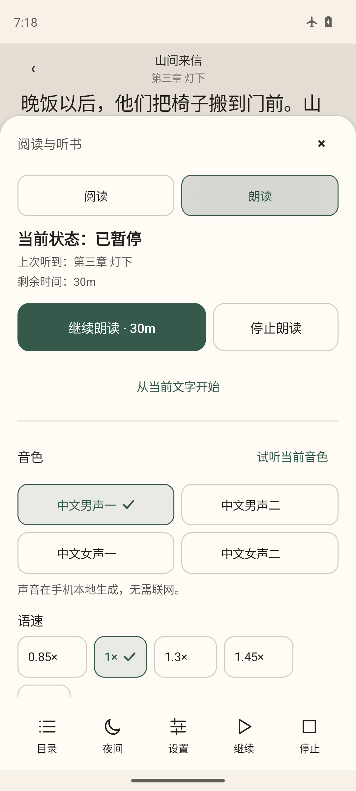

大脸猫阅读 · 2026.09.20
四个页面，真实界面前后对比
旧版 v3 与本轮新版均为 App 实际运行截图，本页不使用概念稿。新版以暖纸、墨字和松绿色组织界面，重点呈现书籍、阅读操作和听书控制。点击截图可打开原图。
两版截图中的书籍内容、数量、阅读位置和播放状态可能不同；请比较配色、信息层级与操作布局，不据此推断正文容量或功能数量。夜间区域展示新版真实截图。
01
书架
本地文字封面与书名层级，清晰的导入入口。


02
阅读控制
图标配合中文标签，减轻容器和阴影。


03
阅读设置
对齐参数与调节操作，主题和阅读模式显示明确选中状态。


04
听书
突出当前播放动作，音色、语速和定时优先展示，音高可展开调节。


新版夜间实拍
四个页面采用相同的信息层级，按夜间背景调整面板、文字和操作强调色。